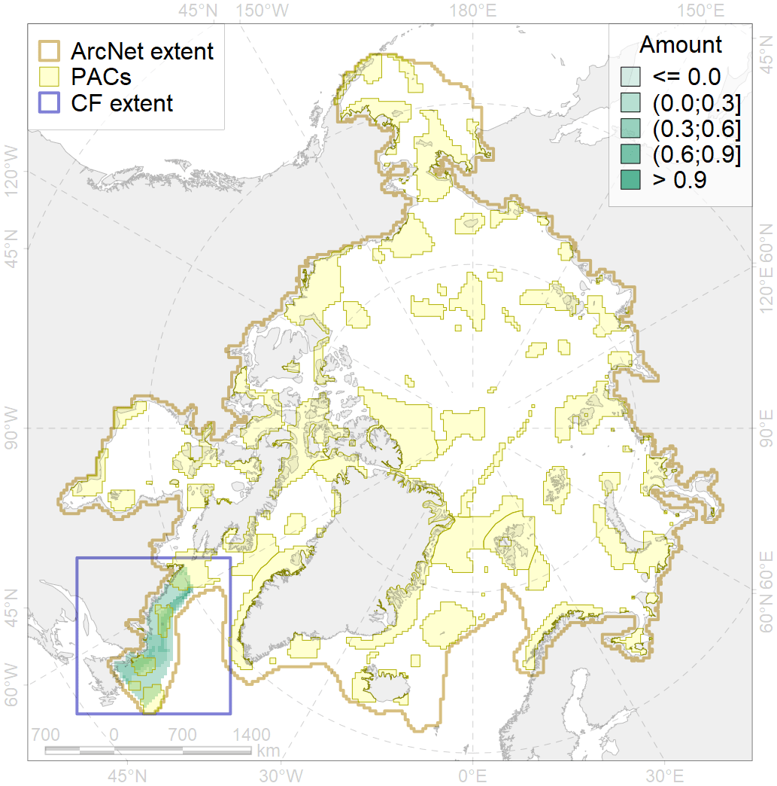
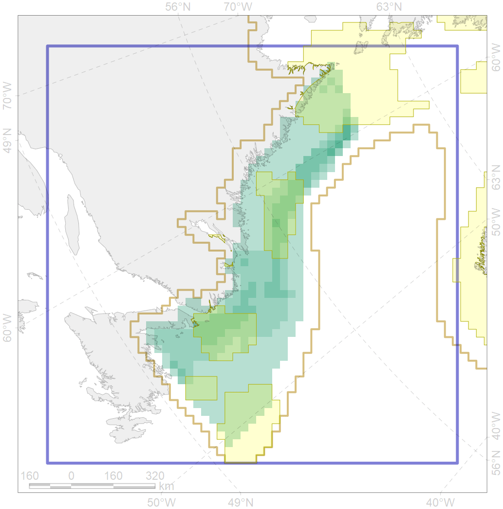

3023

| CF code | 3023 |
| CF name | Marginal Ice Zone distribution in April in the Labrador Sea LME |
| Time Period | 1979 - 2017, adopted for recent changes |
| Source(s) | Lavielle M. 1999. Detection of multiple changes in a sequence of dependent variables. Stochastic Processes and their Applications, 83(1): 79–102. doi:10.1016/S0304-4149(99)00023-X. |
| Seasonality | April |
| Depth Horizon | 0 |
| Methodology | Strong C, Rigor IG. 2013. Arctic marginal ice zone trending wider in summer and narrower in winter. Geophysical Research Letters, 40(18): 4864–4868. doi:10.1002/grl.50928. Lavielle M. 1999. Detection of multiple changes in a sequence of dependent variables. Stochastic Processes and their Applications, 83(1): 79–102. doi:10.1016/S0304-4149(99)00023-X. |
| Use Restrictions | Joined terms of data licenses, copyrights, restrictions, terms of use, disclaimers, etc. No additional terms from data contributor. |
| Author Name | Nikita Platonov |
| Notes | |
| Scenario’s Target | 0.12 |
| Target Achievement | 0.410 (Scenario: 341.4%) |
| PAC | Share of the Total Amount within the PAC | Share of the Target Achievement for the ArcNet | PAC’s Contribution to the Target Achievement |
|---|---|---|---|
| 76 | 4.0%4.1% | 31.7%32.4% | 9.3%9.5% |
| 77 | 17.2% | 134.1% | 39.3% |
| 78 | 0.0%0.0% | 0.0%0.0% | 0.0%0.0% |
| 79 | 14.9%15.9% | 103.9%104.5% | 30.4%30.6% |
| 80 | 2.0%2.4% | 13.6%14.6% | 4.0%4.3% |
| 81 | 1.7%2.0% | 9.7%10.5% | 2.9%3.1% |
| inner | 39.8%41.5% | 293.0%296.1% | 85.8%86.7% |
| outer | 60.2%62.5% | 48.4%56.5% | 14.2%16.5% |
| † supplement values are for area consistence whereas principal values are for Accenter compatible gridded stats |